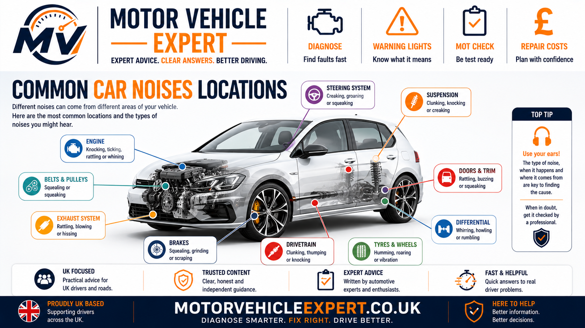
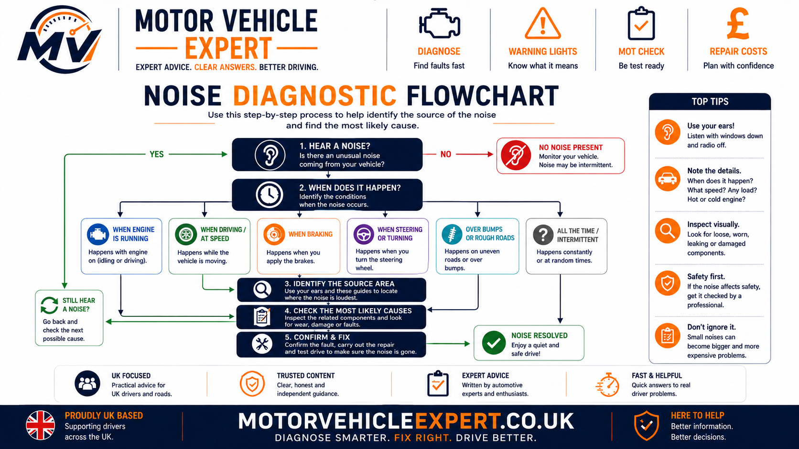
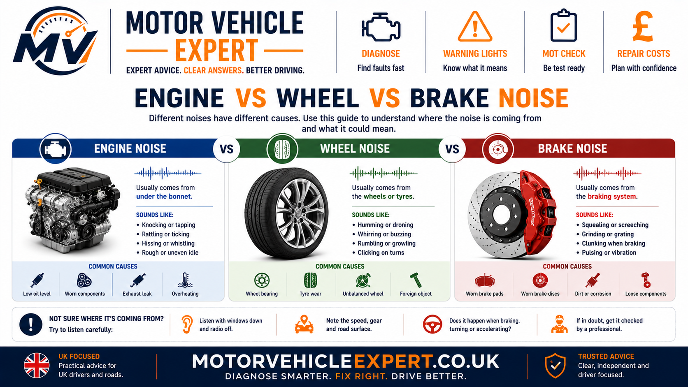
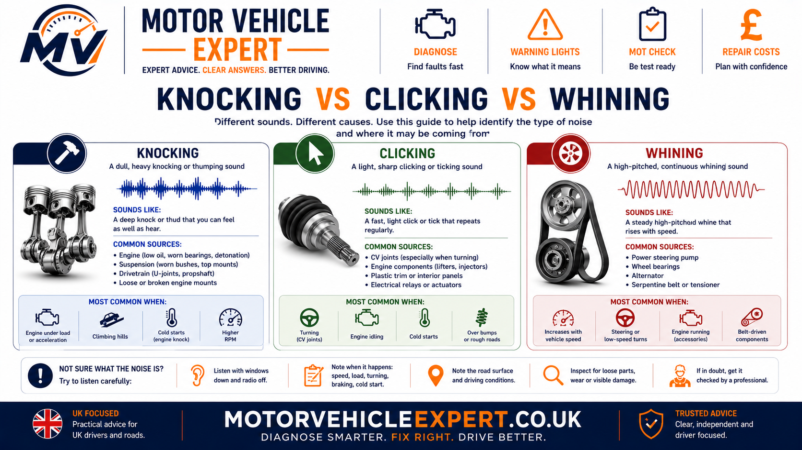
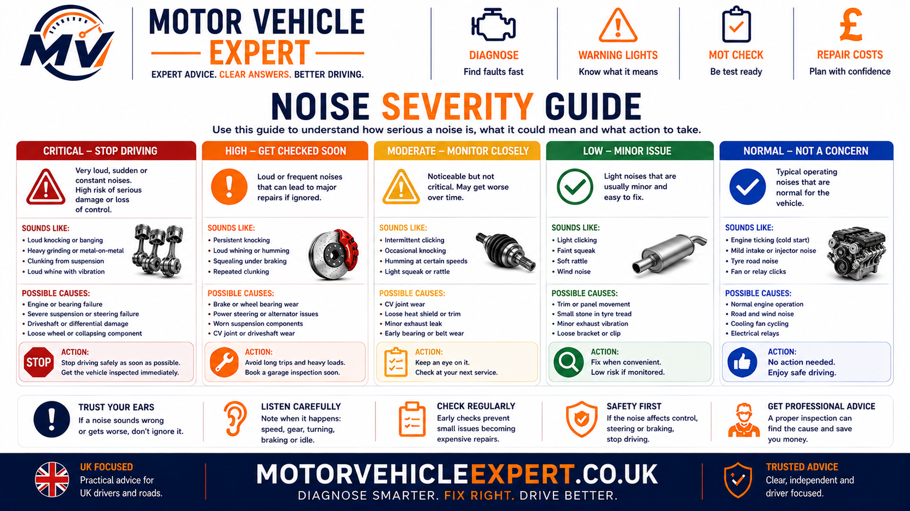
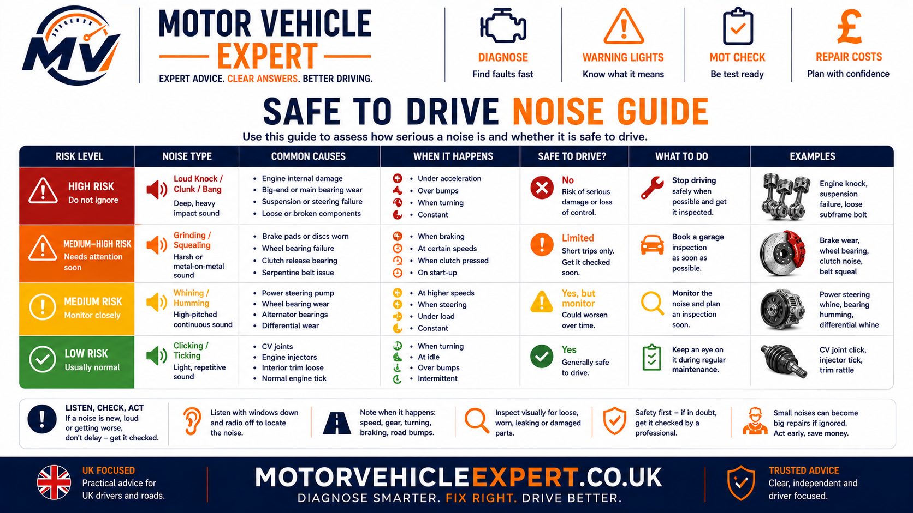
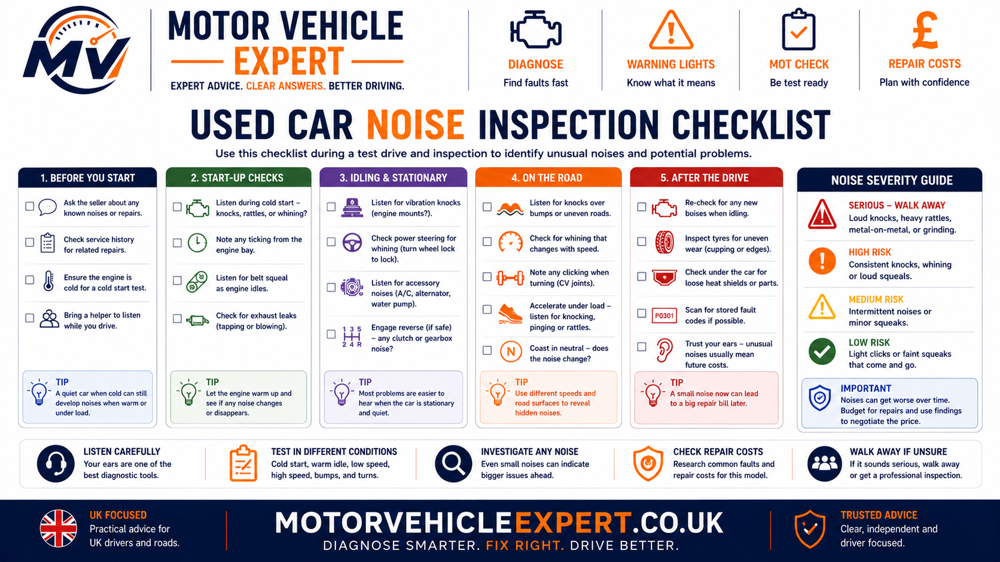

What Does a Strange Car Noise Usually Mean?
A strange car noise means something is creating vibration, friction, impact, airflow or mechanical movement that has become noticeable. The sound alone rarely proves which component has failed. The strongest diagnostic clues are when the noise occurs and what makes it change.
A noise that rises with engine rpm points in a different direction from one that follows road speed. Grinding during braking needs a different inspection from clicking on full steering lock, while a startup rattle has a different diagnostic path from humming at motorway speed.
Noise Changes With Engine Speed
Engine, auxiliary-drive, exhaust, clutch or gearbox-input components become more likely.
Noise Gets Louder As Speed Rises
Tyres, wheel bearings, brakes, driveshafts and final-drive components move higher on the diagnostic list.
Noise Appears When Braking
Brake pads, discs, calipers, shields and nearby wheel-end components deserve immediate attention.
Noise Appears When Turning
CV joints, wheel bearings, steering components and suspension joints become more relevant.
Knock or Clunk Over Uneven Roads
Suspension links, bushes, ball joints, top mounts, springs and loose components commonly require inspection.
Noise Changes With Pedal or Gear
Clutch, release system, gearbox input bearings, flywheel or drivetrain components may be involved.
| When the noise happens | First system to consider | Useful next clue |
|---|---|---|
| Changes with engine rpm while stationary | Engine, accessories, exhaust, clutch/input side | Compare cold vs warm |
| Gets louder mainly with road speed | Tyres, wheel bearings, brakes, drivetrain | Compare cornering and road surfaces |
| Happens only while braking | Brake system | Check vibration, pulling and braking performance |
| Happens during turning | CV joint, steering, suspension, wheel bearing | Compare full-lock and gentle turns |
| Happens over bumps | Suspension, mountings or loose components | Compare small sharp bumps with large body movement |
| Changes when clutch pedal is pressed | Clutch, release system or gearbox input side | Compare released, bite-point and fully pressed positions |
“My car is knocking” is only the starting point. “It knocks from the front left over small bumps below 20 mph” is much more useful because the operating condition immediately narrows the diagnostic area.
If a new noise is accompanied by poor braking, unstable steering, overheating, oil-pressure warnings, smoke, fluid loss or major vibration, stop safely and arrange inspection rather than continuing to drive.
How Mechanics Diagnose Car Noises
A proper vehicle-noise diagnosis starts by reproducing the sound under the exact condition in which it occurs. The technician then changes one operating condition at a time to see what makes the noise appear, disappear, become louder or change pitch.
The aim is to separate the vehicle into systems before individual components are blamed. Engine speed, road speed, steering angle, braking, clutch operation, gear selection, temperature and road surface can often narrow the fault much faster than the sound description alone.
1. Reproduce the sound
Confirm whether it occurs during cold start, idle, acceleration, cruising, braking, steering, gear changes, clutch operation or travel over bumps.
2. Locate the general area
Decide whether the sound appears to come from the engine bay, front wheel area, rear axle, transmission tunnel, exhaust or inside the cabin.
3. Compare engine rpm
If the noise changes directly with engine speed, the engine, auxiliary drive, exhaust, clutch or gearbox-input side deserves more attention.
4. Compare road speed
If the sound becomes louder or faster mainly as vehicle speed increases, inspect tyres, wheel bearings, brakes and drivetrain components.
5. Change steering load
Steering changes load on CV joints, wheel bearings, suspension joints, top mounts and steering components.
6. Apply the brakes
A sound that appears or changes with brake application immediately moves the brake system and wheel-end components higher on the diagnostic list.
7. Change clutch and gear conditions
Pressing the clutch, changing gear and comparing power with overrun can reveal clutch, gearbox, mount or drivetrain-related faults.
8. Confirm physically
Once the likely system has been narrowed down, inspect for wear, heat, fluid loss, movement, looseness, damaged mountings and other physical evidence before replacing parts.
“The car knocks” is vague. “The front left knocks over small bumps below 20 mph but is quiet on smooth roads” is far more useful because it immediately narrows the inspection.
Common Car Noises and What They May Mean
Drivers often describe the same mechanical sound differently, so these noise categories should be treated as diagnostic starting points rather than final answers. The most useful approach is to combine the sound with when it occurs and what makes it change.
Knocking
Knocking can come from suspension joints, steering parts, engine mounts, drivetrain movement or internal engine faults depending on when it occurs.
Knocking When Turning →Grinding
Grinding often points towards brakes, wheel bearings, drivetrain wear or another form of unwanted metal-to-metal contact.
Brakes Grinding When Driving →Clicking
Repeated clicking while turning is commonly associated with CV joints, driveshafts or other loaded front-end components.
Clicking When Turning →Humming or Droning
Humming that becomes louder with road speed often points towards tyres or wheel bearings, although drivetrain components can produce similar sounds.
Wheel Bearing Noise →Squealing
Squealing can come from brakes, auxiliary belts, pulleys or other friction surfaces depending on whether it follows braking or engine rpm.
Brake Warning Signs →Whining
Whining may involve belts, alternators, steering systems, gearboxes, differentials, wheel bearings or turbo-related components.
Whining When Accelerating →Rattling
Rattling can come from timing components, heat shields, exhaust parts, loose brackets, clutch/flywheel components or other vibrating parts.
Timing Chain Rattle →Blowing or Puffing
A blowing sound commonly suggests an exhaust leak, split flex section, leaking joint, manifold leak or damaged exhaust section.
Exhaust Blowing Noise →Creaking
Creaking often appears as suspension or steering joints, bushes and top mounts move under load.
Suspension MOT Guide →A loud interior rattle may be harmless while a quieter wheel-bearing, steering or brake fault can have greater safety significance. Judge the noise by the system involved and any accompanying symptoms.
Where Is the Noise Coming From?
Sound can travel through the body, drivetrain and suspension, so the place where a driver hears the noise is not always the exact source. Even so, identifying the general area can eliminate large sections of the vehicle from the first inspection.
Front Engine Bay
Check the engine, auxiliary belt system, pulleys, alternator, pumps, engine mounts and front exhaust area.
Front Wheel Area
Check brakes, wheel bearings, CV joints, driveshafts, steering joints and front suspension.
Transmission Tunnel
Gearbox, clutch, propshaft, centre bearings, exhaust components and heat shields can transmit noise through the centre of the vehicle.
Rear Wheel Area
Rear brakes, wheel bearings, tyres, suspension and differential components may all create speed-related noises.
Underneath the Car
Exhaust shields, mountings, undertrays, suspension and drivetrain components can strike or vibrate against the body.
Inside the Cabin
Seats, dashboards, trims and stored objects can imitate mechanical rattles, so exclude simple cabin causes before dismantling vehicle systems.

Location is only the first clue. The source should still be confirmed by comparing engine rpm, road speed, braking, steering, clutch position and vehicle load.
A bearing, exhaust mount or drivetrain component may transmit vibration through the floor or body and appear to come from somewhere else. Physical confirmation remains important.
Knocking, Ticking, Rattling and Whining From the Engine
Engine-related noises can range from normal injector operation and minor belt-drive faults to serious lubrication or internal mechanical problems. The first useful test is whether the noise follows engine rpm.
Knock Under Acceleration
Load-related knocking may involve combustion quality, engine mounts, internal clearances or drivetrain movement.
Acceleration Fault Guide →Rattle When Starting
A startup rattle may involve timing components, oil pressure delay, auxiliary pulleys, heat shields or other engine-bay components.
Timing Chain Rattle →Uneven Running or Popping
Misfires can create an uneven exhaust note, shaking, popping and hesitation rather than a single mechanical knock.
Engine Misfire Symptoms →Whine or Squeal With RPM
Belts, tensioners, pulleys, alternators and pumps can produce high-pitched sounds that rise directly with engine speed.
Alternator Fault Signs →Rattle or Vibration at Idle
Engine mounts, exhaust parts, pulley systems, combustion faults and clutch/flywheel behaviour can all become more noticeable at idle.
Car Vibrates at Idle →Ticking or Blowing Near Engine
A manifold leak or damaged exhaust joint can create sharp ticking or blowing that changes with rpm and engine load.
Exhaust Blowing Noise →If an oil-pressure warning stays illuminated and the engine begins knocking or rattling, stop the engine safely. Lack of lubrication can cause severe internal damage very quickly.
Grinding, Squealing and Scraping When Braking
Brake noises deserve priority because the braking system is safety critical. A brief squeak after overnight parking can simply be surface corrosion, while persistent grinding can indicate advanced friction-material wear or other mechanical contact.
Grinding
Grinding may mean the brake pad friction material has worn away and metal is contacting the disc.
Brakes Grinding Guide →Squealing
Pad wear indicators, glazing, brake dust, corrosion or hardware vibration can all create squealing.
Brake Warning Signs →Noise With Vibration
Brake judder can involve disc thickness variation, hub condition, caliper faults, suspension movement or bearing play.
Car Shakes When Braking →If brake noise is accompanied by weak stopping performance, severe pulling, warning lights or a soft pedal, treat the problem as a safety fault rather than simply a noise issue.
Clunking, Knocking and Creaking Over Bumps
Suspension noises often appear over rough roads, speed humps or during changes in vehicle direction. Several suspension components can produce very similar sounds, so inspection for movement and wear is important.
Anti-Roll Bar Links
Worn joints can produce light repeated knocking over small sharp road imperfections.
Suspension Bushes
Perished or separated bushes can create knocks, creaks and excessive movement under braking or acceleration.
Ball Joints
Excessive joint wear can cause knocking and may affect wheel control and steering accuracy.
Ball Joint MOT Guide →Top Mounts
Worn top mounts or bearings may clunk or creak during steering and suspension movement.
Coil Springs
Broken springs can create metallic noises and changes in ride height or wheel position.
Shock Absorbers
Worn bushes, internal faults or loose mountings can create knocking and reduced body control.
Suspension MOT Guide →Suspension noise becomes more serious when it is accompanied by steering wander, uneven tyre wear, excessive body movement or visible wheel-position changes.
Clicking, Clunking, Creaking, Groaning and Popping When Turning
Turning the steering changes load through CV joints, steering joints, track rods, wheel bearings, suspension mounts, springs, bushes and steering-rack components. The exact sound and the conditions needed to reproduce it provide strong diagnostic clues.
Start by separating a single clunk from repeated clicking, a spring-like pop, a continuous creak or a deeper groan. Then compare whether the noise occurs while stationary or moving, at low speed, on full lock or specifically when steering direction changes.
Car Creaks When Turning Steering Wheel
Compare top mounts, strut bearings, spring movement, ball joints, suspension bushes and steering components when a creak appears during steering.
Creaking When Turning →Car Clunks When Turning at Low Speed
Diagnose clunks during parking and manoeuvring by comparing steering load, suspension movement, drive direction, braking and road surface.
Low-Speed Turning Clunk →Car Clicks When Turning at Low Speed
Repeated clicking while moving on a tight turn makes an outer CV joint particularly important, but the click pattern should be confirmed before parts are replaced.
Low-Speed Turning Clicks →Car Makes Noise on Full Lock
Clicking, groaning, whining, creaking, clunking and rubbing near maximum steering angle require different diagnostic paths.
Full-Lock Noise Guide →Steering Wheel Creaks When Turning
Separate steering-wheel, column, intermediate-shaft, bulkhead, EPS, steering-rack and wheel-end noises when the creak appears to come from inside the cabin.
Steering-Wheel Creak Guide →Car Groans When Turning
Compare hydraulic power-steering fluid, aeration, pumps and racks with EPS faults, top mounts and mechanical steering resistance.
Groaning When Turning →Car Pops When Turning
A pop can result from spring wind-up and release, top-mount movement, suspension joints, bushes or another component shifting as steering load changes.
Popping When Turning →Car Clunks When Changing Steering Direction
A clunk as steering changes from left to right or right to left can expose free play in the column, intermediate shaft, steering rack, track rods, suspension joints or mountings.
Steering-Direction Clunk →Clicking Noise When Turning
Repeated clicking under power on tight turns commonly directs inspection towards the outer CV joint and its protective boot.
Clicking When Turning →Knocking Noise When Turning
Top mounts, ball joints, bushes, steering joints and CV components can all produce knocks during steering movement.
Knocking When Turning →Power Steering Warning & Heavy Steering
Hydraulic steering systems may whine because of fluid, pump or belt faults, while electric systems require a different diagnostic approach.
Power Steering Warning →Bad Top Mount Symptoms
Top mounts and strut bearings can cause clunks, creaks, spring movement and steering-related noises, making them an important comparison across this turning-noise cluster.
Bad Top Mount Symptoms →Repeated clicking while the wheels rotate, a single clunk as steering load reverses, a spring-like pop, a cabin creak and a hydraulic-style groan are different diagnostic patterns. Match the sound to steering angle, vehicle movement and load before deciding which component deserves inspection.
If the steering becomes heavy, loose, notchy or unpredictable, develops abnormal free play, or a wheel or suspension component appears to move excessively, arrange prompt professional inspection because vehicle control may be affected.
Gearbox, Differential and Driveshaft Noises
Drivetrain noises can be difficult to isolate because engine torque passes through several components before reaching the wheels. The selected gear, road speed, throttle position and whether the vehicle is accelerating or coasting can all change the sound.
Whine During Acceleration
Gearbox bearings, gearsets, final-drive components or differential wear can become more noticeable under load.
Whining When Accelerating →Clunk When Taking Up Drive
Engine or gearbox mounts, driveshaft joints and excessive drivetrain clearance can produce a clunk as torque changes direction.
Clicking During Turns
CV joints become highly relevant when clicking occurs during low-speed steering under power.
CV / Clicking Guide →If a whine changes significantly when the accelerator is released, record that behaviour. Gear and bearing loading changes between power and coast conditions.
Noise When the Clutch Is Pressed, Released or Pulling Away
Manual-clutch diagnosis often starts by comparing the noise with the pedal fully released, partly pressed and fully depressed. Those positions change the load and rotation of the clutch release system and gearbox input side.
Noise When Pedal Is Pressed
Release-bearing, fork, guide or pressure-plate components become more relevant when the sound appears under pedal load.
Rattle With Pedal Released
Gearbox-input, flywheel or clutch-hub movement may create idle rattles that change when the clutch is disengaged.
Noise or Judder Pulling Away
Clutch friction, contamination, mounts, flywheel condition and drivetrain movement can all create noise and vibration during take-up.
Clutch Judder Guide →Record exactly when the noise changes: pedal released, beginning to press, around the bite point or pedal fully down. That distinction helps separate clutch and gearbox input-side faults.
Humming, Droning and Roaring That Gets Louder With Speed
Wheel bearings and tyres are commonly confused because both can create humming or roaring that follows road speed. The correct diagnosis compares cornering load, tyre tread, pressure and different road surfaces.
Wheel-Bearing Hum
A worn bearing may produce humming, droning or growling that becomes more noticeable as road speed rises.
Wheel Bearing Noise →Tyre Roar
Aggressive tread patterns, uneven wear and certain road surfaces can produce substantial noise that sounds like a bearing fault.
Tyre MOT Guide →Noise With Wheel Play
Humming or rumbling combined with excessive wheel movement or severe vibration requires faster inspection.
Wheel Bearing MOT Guide →Check tyre pressures, tread blocks, cupping, feathering and whether the sound changes on a different road surface before replacing a wheel bearing based only on noise.
Blowing, Rattling and Metallic Exhaust Sounds
Exhaust noise can come from gas leakage, loose mountings, corroded sections, damaged heat shields or failed internal silencer components. Because the system runs underneath much of the vehicle, vibration can transmit through the body and make the source difficult to locate from the cabin.
Blowing or Puffing
Leaks from manifolds, gaskets, flex sections, joints or pipework can create a blowing or puffing sound that changes with engine load.
Exhaust Blowing Noise →Metallic Rattle
Loose heat shields, brackets and exhaust mountings often rattle within a narrow rpm range.
Exhaust Knock Under Floor
Damaged rubber mounts or incorrect alignment can allow the exhaust to strike the body or suspension.
Rattle Inside Silencer
Internal baffles can loosen or corrode and create a rattle that appears to come from inside the exhaust box.
Ticking Near Engine
Exhaust-manifold or gasket leaks can create sharp ticking that rises with rpm and may be more obvious when the engine is cold.
Noise Plus Exhaust Smell
Exhaust fumes entering the passenger compartment increase the urgency because exhaust gases should not accumulate in the cabin.
A noisy exhaust may simply have a leak or failed silencer, but fumes entering the passenger compartment introduce an additional safety concern and should not be ignored.
Step-by-Step Car Noise Diagnostic Workflow
A professional noise diagnosis should move from broad clues towards specific evidence. The goal is to narrow the vehicle into the most likely system before individual parts are condemned.
This matters because several faults can produce similar sounds. A wheel bearing, uneven tyre wear, gearbox bearing and differential can all be described as a hum or drone, while a suspension joint, engine mount and drivetrain fault can all be described as a knock.
1. Define the sound
Decide whether the noise is best described as knocking, grinding, clicking, humming, rattling, squealing, whining, scraping, creaking or another repeatable sound.
2. Record when it happens
Note whether it occurs at startup, idle, acceleration, cruising, braking, steering, clutch operation, gear changes or while driving over bumps.
3. Compare engine rpm
If the noise changes directly with engine speed, engine, auxiliary-drive, exhaust and clutch/input-side components become more relevant.
4. Compare road speed
If the sound becomes faster, louder or higher-pitched with vehicle speed, inspect tyres, wheel bearings, brakes, driveshafts and drivetrain components.
5. Change steering load
Gentle left and right steering can change wheel-bearing, CV-joint, tyre, suspension and steering-related noises.
6. Apply the brakes
A sound that appears, disappears or changes with brake application moves the brake system and nearby wheel-end components higher on the diagnostic list.
7. Change gear and load
Compare acceleration, steady throttle and overrun in different gears to identify load-dependent engine, gearbox, differential or mount-related noises.
8. Confirm the component
Inspect the suspected system for movement, wear, heat, fluid loss, damaged mountings, excessive clearance or abnormal roughness before replacing parts.

Changing one condition at a time helps separate engine, braking, steering, suspension, wheel, clutch and drivetrain noises before individual components are tested.
If the technician cannot reproduce the sound, the chance of replacing the wrong component increases. Intermittent noises should be documented carefully so the original conditions can be recreated as closely as possible.
If the noise began immediately after brake work, suspension repairs, tyre replacement, clutch work, exhaust repair or a pothole impact, mention it. Recent changes should be checked without automatically assuming they caused the fault.
Engine Noise vs Wheel Noise vs Brake Noise
One of the fastest ways to narrow a vehicle noise is to establish whether it follows engine rpm, vehicle speed or brake application. These three behaviours point towards very different areas of the car.
Noise Follows Engine RPM
The pitch or frequency changes when the engine is revved, even while the vehicle is stationary.
- ✓ Engine internals
- ✓ Auxiliary belts and pulleys
- ✓ Alternator or pumps
- ✓ Exhaust manifold / heat shield
- ✓ Clutch or gearbox input side
Noise Follows Vehicle Speed
The noise becomes faster or louder as road speed rises, even when engine rpm changes after selecting another gear.
- ✓ Tyres
- ✓ Wheel bearings
- ✓ Driveshafts
- ✓ Differential or final drive
- ✓ Rotating brake components
Noise Changes When Braking
The noise appears, disappears or becomes substantially louder as brake pressure is applied.
- ✓ Brake pads
- ✓ Brake discs
- ✓ Calipers and hardware
- ✓ Backing plates and shields
- ✓ Wheel-end movement

This comparison narrows the system rather than identifying a single failed component. Physical inspection is still required before parts are authorised.
| What changes the noise? | More likely area | Useful next test |
|---|---|---|
| Engine rpm while stationary | Engine, accessories, exhaust, clutch/input side | Compare cold and warm operation |
| Road speed in several gears | Tyres, wheel bearings, driveshaft or final drive | Compare road surface and cornering load |
| Brake pedal application | Brake system or nearby wheel-end component | Check pull, pedal feel and vibration |
| Left or right steering input | Bearing, CV joint, tyre, suspension or steering | Compare gentle bends with full lock |
| Clutch pedal position | Release system, clutch or gearbox input side | Compare pedal released and fully depressed |
| Acceleration vs overrun | Engine mounts, gearbox, differential or drivetrain | Compare the same road speed under different load |
Knocking vs Clicking vs Whining: How the Sounds Differ
Noise descriptions are subjective, but the rhythm and operating condition can still provide useful diagnostic information. A knock is usually a heavier impact-type sound, clicking is generally sharper and repetitive, while whining is normally a more continuous high-pitched rotational sound.
Heavier Impact-Type Noise
Knocking commonly suggests excessive movement, mechanical clearance or two components contacting under load.
- • Suspension joints and bushes
- • Engine or gearbox mounts
- • Drivetrain backlash
- • Internal engine faults
Sharp Repeated Mechanical Sound
Clicking often comes from a smaller component repeatedly moving, contacting or operating.
- • CV joints during turns
- • Starter or electrical switching
- • Injector or valve-train operation
- • Loose rotating contact
High-Pitched Rotational Noise
Whining is commonly produced by rotating gears, bearings, pumps, belts or high-speed auxiliary components.
- • Gearbox or differential
- • Auxiliary belt components
- • Power-steering pump
- • Turbo or intake-related systems

Sound type is most useful when combined with speed, steering, load, braking and temperature information.
| Sound | Common condition | Initial diagnostic direction |
|---|---|---|
| Knock over bumps | Suspension movement | Links, bushes, joints, mounts, springs |
| Knock under acceleration | Engine / drivetrain load | Engine, mounts, drivetrain or internal wear |
| Click on full lock | Steering angle plus drive torque | CV joint / driveshaft |
| Fast ticking with rpm | Engine operation | Injector, valve train or exhaust leak |
| Whine with acceleration | Increased drivetrain load | Gearbox, differential, turbo or auxiliaries |
| Whine while steering | Steering system load | Hydraulic pump, fluid, belt or steering system |
What one driver calls a knock another may call a clunk or heavy click. The operating condition and physical evidence should always carry more diagnostic weight than the exact word used to describe the sound.
How a Garage Diagnoses a Difficult Car Noise
A workshop should confirm the customer's complaint before recommending repairs. The diagnostic process may involve a controlled road test, static engine checks, a vehicle lift, physical measurements and comparison between related components.
Difficult noises sometimes require more than one test because temperature, road surface, weather or load can determine whether the sound appears.
1. Customer description
The technician records what the noise sounds like, when it occurs, how long it has been present and whether anything changed immediately beforehand.
2. Controlled road test
Speed, gear, throttle, braking and steering are varied safely to reproduce the original complaint.
3. Static engine test
Where appropriate, engine rpm, auxiliary loads and clutch operation are checked while stationary.
4. Lift inspection
Brakes, suspension joints, wheel bearings, tyres, driveshafts, exhaust mountings and underbody components are inspected physically.
5. Measure rather than guess
Bearing play, brake-disc condition, fluid level, temperatures, clearances and other measurable evidence help confirm the suspected fault.
6. Verify before repair
The suspected component should explain both the sound and the exact conditions in which the sound appears.
What to Tell the Garage
- ✓ What the noise sounds like.
- ✓ When it happens.
- ✓ Approximate speed or engine rpm.
- ✓ Where it appears to come from.
- ✓ Whether steering or braking changes it.
- ✓ Whether warning lights or vibration appear too.
Mention Any Recent Changes
- ✓ Brake repairs
- ✓ Tyre replacement
- ✓ Suspension work
- ✓ Clutch or gearbox work
- ✓ Pothole or kerb impact
- ✓ Long journey or overheating event
For example, a wheel-bearing diagnosis is stronger when the noise follows road speed, bearing roughness is physically confirmed and the behaviour matches the road-test findings.
Where practical, the faulty component should be confirmed before repair. Guessing becomes especially expensive with gearboxes, engines, clutch/flywheel assemblies and drivetrain components.
Car Noise Severity Guide: Monitor, Inspect or Stop Driving?
The seriousness of a car noise should be judged from the vehicle system involved, how quickly the noise is worsening and whether it is accompanied by changes in braking, steering, temperature, warning lights or vehicle stability.
Loudness alone is not a reliable safety measure. A loud trim rattle may be inconvenient but harmless, while a quieter wheel-bearing or steering-joint fault can have greater safety significance.
Monitor
Minor intermittent noises with no effect on braking, steering, handling or engine operation can often be monitored while the source is identified.
Arrange Inspection
Persistent humming, knocking, ticking, rattling or creaking should be investigated before wear becomes more severe.
High Priority
Grinding, rapid deterioration, strong vibration, fluid leakage or noises linked to brakes, steering or drivetrain movement need prompt diagnosis.
Stop Driving
Stop safely when noise is accompanied by weak braking, steering loss, oil-pressure warning, severe overheating, smoke, major wheel movement or another immediate safety concern.

Noise becomes substantially more urgent when the underlying system affects braking, steering, wheel security, engine lubrication or vehicle control.
| Noise situation | Priority | Recommended response |
|---|---|---|
| Brief light squeak with normal vehicle operation | Lower | Monitor and inspect if persistent |
| Persistent hum, knock, tick or rattle | Medium | Arrange diagnosis soon |
| Wheel-area grinding or strong vibration | High | Limit driving and inspect promptly |
| Steering noise with looseness or heavy steering | High / Critical | Stop if safe vehicle control is affected |
| Engine knock with oil-pressure warning | Critical | Stop the engine safely |
| Brake grinding with reduced stopping performance | Critical | Do not continue normal driving |
| New noise after pothole impact with unstable handling | High / Critical | Inspect wheel, tyre, steering and suspension |
A sound that was previously minor should be reassessed if it becomes louder, more frequent or starts appearing with warning lights, vibration, poor braking or handling changes.
Is It Safe to Drive a Car That Is Making a Noise?
Whether a noisy car is safe to drive depends on the system involved, how suddenly the noise appeared and whether anything else changed at the same time. A minor interior rattle is very different from grinding brakes, a loose wheel bearing or an engine knock accompanied by an oil-pressure warning.
The safest approach is to judge the noise together with braking performance, steering control, warning lights, vibration, temperature, fluid loss, smoke and any change in how the vehicle drives.
Minor Intermittent Noise
A light trim rattle, brief brake squeak after standing or another minor sound may allow normal driving while the source is monitored.
Persistent Mechanical Noise
Repeated humming, knocking, creaking, ticking or whining should be inspected before the condition becomes more severe.
Grinding or Heavy Vibration
Grinding, scraping, strong vibration or obvious drivetrain movement can indicate advanced wear and should not be treated as normal vehicle noise.
Noise With Safety Symptoms
Stop safely if the noise is accompanied by poor braking, steering difficulty, oil-pressure loss, severe overheating, smoke, fluid loss or major wheel movement.
Driving May Be Possible When...
- ✓ The vehicle still brakes normally.
- ✓ Steering remains predictable.
- ✓ No critical warning lights are illuminated.
- ✓ No major wheel vibration or movement is present.
- ✓ The noise is stable rather than rapidly worsening.
- ✓ No fluid leak, smoke or overheating is present.
Do Not Continue Normal Driving When...
- ! Brakes grind and stopping performance has changed.
- ! Steering becomes loose, heavy or unpredictable.
- ! An oil-pressure warning appears with engine noise.
- ! A wheel has obvious play or severe vibration.
- ! The engine is overheating or producing smoke.
- ! The noise suddenly becomes dramatically worse.

The driving decision should be based on the complete vehicle condition rather than the sound alone.
Where braking, steering, lubrication, overheating or wheel security may be involved, continued driving can turn a developing fault into a mechanical failure.
Typical UK Costs for Common Car-Noise Repairs
The cost of repairing a noisy car depends entirely on the component causing the sound. A loose heat shield can be inexpensive, while internal engine, clutch or gearbox faults can require substantial labour and parts.
These figures are broad UK planning ranges only. Vehicle design, labour rates, parts quality, access and additional damage discovered during inspection can change the final quotation considerably.
Heat Shield / Loose Exhaust Fixing
£30–£150Tightening, replacing a clamp or securing a loose shield can be relatively inexpensive when no larger exhaust damage exists.
Brake Pads or Pads & Discs
£100–£500+Cost depends on axle, vehicle size and whether grinding has damaged the discs as well as the pads.
Wheel Bearing Replacement
£150–£450+Some bearings are separate service parts while others are supplied as complete hub assemblies.
Bush, Link or Joint Repair
£80–£600+Anti-roll bar links can be relatively inexpensive, while complete arms, struts and larger suspension assemblies cost more.
CV Joint or Driveshaft
£150–£500+Some vehicles allow a CV joint to be replaced separately, while others are more economical to repair with a complete driveshaft.
Exhaust Section Replacement
£100–£800+A rear silencer is usually cheaper than a manifold, catalytic converter or more complex emissions-related exhaust section.
Clutch / Flywheel Repair
£600–£1,800+Gearbox removal is usually required, and cost rises where the flywheel or release system also needs replacement.
Gearbox or Differential Repair
£500–£3,000+Bearing replacement, internal rebuilding and complete gearbox replacement vary enormously between vehicle designs.
Internal Engine Noise Repair
£500–£4,000+Costs range from smaller valve-train repairs to major internal engine work or replacement engines.
| Noise / likely area | Typical repair direction | Broad UK planning range |
|---|---|---|
| Metallic exhaust rattle | Shield, mount, clamp or exhaust section | £30–£800+ |
| Brake squeal or grinding | Pads, discs, caliper or retaining hardware | £100–£500+ |
| Road-speed humming | Tyre correction or wheel bearing | £0–£450+ |
| Suspension knock | Link, bush, joint, arm, spring or damper | £80–£600+ |
| Clicking on full-lock turns | CV joint or driveshaft | £150–£500+ |
| Clutch / flywheel rattle | Clutch, release system or flywheel | £600–£1,800+ |
| Gearbox whine | Bearings, gears or gearbox replacement | £500–£3,000+ |
| Serious internal engine knock | Internal diagnosis, repair or engine replacement | £500–£4,000+ |
A £50 heat-shield repair and a £2,000 gearbox repair can both be described as a “rattle underneath”. The source should be confirmed before repair costs are accepted.
Can a Car Noise Cause an MOT Failure?
A noise does not normally fail an MOT simply because the vehicle sounds different. What matters is the defect causing the noise. If that defect affects a component covered by the MOT inspection, it may result in an advisory, major defect or dangerous defect depending on severity.
Brake Grinding
Worn, damaged, insecure or ineffective braking components can cause an MOT failure even though the noise itself is only the symptom.
Car Fails MOT on Brakes →Wheel-Bearing Hum
A noisy wheel bearing with excessive play or roughness can become an MOT defect.
Wheel Bearing MOT Guide →Suspension Knock
Excessive wear in ball joints, bushes, mountings or other safety-related suspension parts can cause failure.
Suspension MOT Guide →Steering Noise
Steering joints, racks, mountings or assistance faults may fail where condition or operation falls below the required standard.
Steering Warning Guide →Exhaust Blowing
Exhaust leakage, insecure components and some emissions-related defects can affect the MOT result.
Exhaust Blowing Guide →Tyre Road Noise
Noise alone is irrelevant, but abnormal tyre wear, structural damage and insufficient tread depth can affect the MOT.
Tyres & MOT →Grinding, suspension knocking, wheel-bearing hum, exhaust blowing and steering-related noises are worth investigating before the test because the underlying defect may already be MOT-relevant.
Should You Buy a Used Car That Makes a Strange Noise?
An unexplained vehicle noise should be treated as a repair liability until its source is confirmed. Some sounds are minor, but others can indicate brake, suspension, clutch, gearbox or engine faults that materially affect the value of the car.
Do not rely on a seller saying “they all make that noise” or “it just needs a cheap bearing”. A confident diagnosis should be supported by inspection and a realistic repair estimate.
Minor Confirmed Noise
A known heat-shield rattle or minor trim noise may be acceptable where the diagnosis is clear and the rest of the vehicle is sound.
Suspension or Wheel Noise
Humming, clunking or creaking should be priced before purchase because several related components may require repair.
Clutch or Gearbox Noise
Rattles, whines or grinding associated with gear selection or clutch operation can lead to labour-intensive repairs.
Engine Knock
Persistent internal engine knocking should be diagnosed before purchase because repair costs can exceed the value of some older vehicles.
Brake Grinding
Grinding brakes indicate advanced wear or neglect and may suggest that other routine maintenance has also been delayed.
Several Unexplained Noises
Multiple noises from engine, suspension, brakes and drivetrain can point to a poorly maintained car with substantial repair exposure.

Where possible, test the car from cold and listen during idle, acceleration, braking, steering, gear changes, clutch operation and driving over uneven roads.
More Reassuring Signs
- ✓ The source has been professionally identified.
- ✓ A repair quotation is available.
- ✓ The MOT history supports regular maintenance.
- ✓ No safety-related symptoms are present.
- ✓ Service history is consistent.
Major Red Flags
- ! The seller refuses independent inspection.
- ! Engine knock is dismissed as normal.
- ! Gearbox whine appears in several gears.
- ! Brake grinding occurs on the test drive.
- ! Several unrelated mechanical noises are present.
Until the source is confirmed, treat the noise as an unknown repair liability rather than accepting the seller's lowest cost explanation.
How to Reduce the Risk of Future Vehicle Noises
Not every mechanical noise can be prevented, but routine servicing and early inspection reduce the chance that minor wear develops into a larger failure. Many noises appear gradually as lubrication deteriorates, joints wear, mountings weaken or service items are allowed to exceed their useful life.
Maintain Engine Oil Correctly
Correct oil level, specification and service intervals help protect bearings, timing systems and other internal engine components.
Inspect Brakes Regularly
Replacing worn pads before they reach metal contact can prevent grinding and unnecessary disc damage.
Check Suspension Wear
Worn bushes, links and joints are often easier and cheaper to repair before excessive movement damages related parts.
Maintain Correct Tyre Pressures
Correct pressure helps limit irregular tread wear, tyre noise and unnecessary loading on wheel-end components.
Investigate Fluid Leaks
Low engine, gearbox, differential or steering fluid can contribute to accelerated wear and noise.
Act on New Noises Early
A new sound often provides an opportunity to repair a developing fault before it becomes more expensive.
Brakes, tyres, suspension joints, fluid leaks, belts, mountings and exhaust condition can all reveal developing faults before the driver hears them.
Use Motor Vehicle Expert to Narrow Down the Fault
If you know what the vehicle is doing but are not yet sure which system deserves attention, start with the Motor Vehicle Expert Diagnostic App or Diagnostics Hub.
The aim is not to guess the failed part from one sound. Start from the noise and any accompanying symptoms, then move into the most relevant diagnostic pathway before arranging repair.
Identify the Sound
Decide whether the noise is knocking, grinding, clicking, humming, rattling, squealing or whining.
Add the Operating Condition
Engine speed, road speed, braking, steering, clutch use and road bumps provide the strongest next clues.
Narrow the Vehicle System
Move towards engine, brake, clutch, suspension, steering, wheel-bearing or drivetrain diagnosis rather than replacing parts blindly.
Noise diagnosis ultimately depends on physical evidence. The Diagnostic App can help narrow the pathway, but bearing play, brake wear, fluid loss and mechanical damage may still require workshop testing.
What to Remember About Car Noises
What Drivers Should Do
- ✓ Identify exactly when the noise occurs.
- ✓ Compare engine speed with road speed.
- ✓ Check whether braking or steering changes it.
- ✓ Record cold-versus-warm behaviour.
- ✓ Arrange inspection before severe wear develops.
- ✓ Confirm the fault before buying replacement parts.
What Drivers Should Avoid
- ! Assuming one sound proves one failed component.
- ! Ignoring grinding brakes.
- ! Driving with severe steering-related noise.
- ! Running a noisy engine with an oil warning.
- ! Buying a noisy used car without pricing the fault.
- ! Replacing parts based only on guesses.
Do not diagnose a vehicle simply by naming the sound. Establish when it happens, what changes it, which system responds to that condition and what physical evidence confirms the source.
Related Car Noise and Diagnostic Guides
Use these live Motor Vehicle Expert guides to move from a general noise complaint into the most relevant system-specific diagnostic pathway.
Knocking When Turning
Learn how CV joints, steering components, suspension joints and front-end movement can cause knocking during steering.
Knocking When Turning →Clicking When Turning
Understand repeated clicking on full lock and why outer CV joints and driveshaft components are common diagnostic targets.
Clicking When Turning →Whining When Accelerating
Compare gearbox, differential, auxiliary-drive, power-steering and turbo-related causes of whining under load.
Whining When Accelerating →Brakes Grinding When Driving
Understand brake grinding, metal-to-metal contact, caliper faults and when further driving may be unsafe.
Brake Grinding Guide →Wheel Bearing Noise
Learn how humming, droning and growling change with road speed and how tyre noise can imitate a worn bearing.
Wheel Bearing Noise →Timing Chain Rattle
Understand startup rattles, timing-chain symptoms, oil pressure delays and when engine noise needs prompt investigation.
Timing Chain Rattle →Exhaust Blowing Noise
Diagnose exhaust leaks, flex-pipe damage, manifold leaks, failed joints and blowing noises under load.
Exhaust Blowing Noise →Engine Misfire Symptoms
Compare uneven running, shaking, popping, hesitation and other engine symptoms that may be mistaken for mechanical noise.
Engine Misfire Guide →Car Shakes When Braking
Learn how disc condition, wheel bearings, hubs, calipers and suspension movement can create braking vibration.
Braking Vibration Guide →Wheel Bearing Replacement Cost
Compare typical UK wheel-bearing repair costs and factors that affect labour and parts pricing.
Wheel Bearing Cost Guide →Steering Wheel Shaking
Understand wheel, tyre, braking, steering and suspension causes of steering-wheel vibration while driving.
Steering Wheel Shaking →Car Shaking & Vibration Diagnosis
Follow a broader diagnostic route for vehicle vibration that may occur alongside knocking, humming or drivetrain noise.
Vibration Diagnosis →Diagnostics Hub
Start from the vehicle symptom and move into engine, braking, steering, clutch, cooling and electrical diagnosis.
Diagnostics Hub →Diagnostic App
Use the Motor Vehicle Expert diagnostic pathway when you know the symptoms but are not yet sure which system needs attention.
Open Diagnostic App →Car Servicing Guide
Learn how routine servicing and inspection can identify developing mechanical faults before they become expensive or noisy.
Car Servicing Guide →Car Noises Explained FAQs
These questions cover the most common diagnostic, safety, MOT, repair-cost and used-car concerns associated with unusual vehicle noises.
Why is my car making a strange noise?
A strange car noise can come from the engine, brakes, suspension, steering, transmission, clutch, wheel bearings, tyres, exhaust or an accessory-drive component. The most useful clues are when the noise happens, where it seems to come from and whether it changes with engine speed, road speed, braking or steering.
Why is my car making a knocking noise?
A knocking noise can come from suspension joints, steering components, engine mounts, drivetrain wear or engine faults. When it happens is important, such as turning, accelerating, idling or driving over bumps.
Why is my car making a grinding noise?
Grinding often points to brakes, wheel bearings, drivetrain components or metal-on-metal contact. Grinding when braking should be checked urgently because it may affect stopping performance.
Why does my car make a clicking noise when turning?
Clicking when turning is commonly linked to CV joints, driveshafts, steering parts or suspension components, especially if it happens on full lock.
Why does my car hum louder as I speed up?
A humming noise that gets louder with road speed is often linked to tyre noise or a wheel bearing. If the sound changes when cornering, a wheel bearing should be checked.
What causes a whining noise when accelerating?
Whining during acceleration can come from the transmission, differential, bearings, auxiliary-drive components, power steering system or turbocharger. Whether the noise follows engine speed or vehicle speed is an important diagnostic clue.
Why is my car rattling on startup?
Startup rattles can come from timing chains, belts, pulleys, heat shields, exhaust parts, starter motor issues or oil-pressure delays. A persistent or worsening metallic rattle should be investigated.
Why does my car squeal when driving or braking?
Squealing can come from brake pads, brake hardware, auxiliary belts, pulleys or other friction surfaces. When the noise occurs is the key clue because a squeal only during braking has a different diagnostic path from a squeal that follows engine speed.
Why does my car make a clunking noise over bumps?
Clunking over bumps commonly involves anti-roll bar links, suspension bushes, ball joints, top mounts, shock absorber mountings or other components with excessive movement.
Can wheel bearings cause humming or roaring noises?
Yes. A worn wheel bearing can produce humming, droning or roaring that becomes louder with road speed. Tyres can make similar noises, so bearing condition and tyre wear should both be checked before parts are replaced.
How can I tell whether a noise follows engine speed or road speed?
If the noise changes when engine rpm changes while vehicle speed stays similar, the source is more likely engine, accessory, exhaust or clutch related. If it changes mainly with road speed, tyres, wheel bearings, brakes or drivetrain components become more likely.
Can brake noise be dangerous?
Yes. Light temporary squeaking may be harmless, but grinding, scraping, severe vibration, brake pull or noise accompanied by weak braking can indicate a serious braking fault and should be inspected before further driving.
When should I stop driving because of a car noise?
Stop driving if the noise is loud, sudden, grinding, linked with braking or steering problems, or appears with warning lights, smoke, overheating, burning smells, fluid leaks, severe vibration or loss of control.
Can car noises fail an MOT?
The noise itself is not usually the failure item, but the cause can fail an MOT if it involves brakes, suspension, steering, tyres, wheel bearings, exhaust leaks or insecure components.
How does a mechanic diagnose a car noise?
A mechanic first confirms when the noise occurs, then compares it with engine speed, road speed, braking, steering, gear selection, clutch operation, temperature and road conditions. Inspection, road testing and measurements are then used to confirm the source.
How much does it cost to fix a noisy car in the UK?
Repair cost depends entirely on the source. A loose heat shield or minor adjustment may be inexpensive, while wheel bearings, suspension repairs, clutch work, gearbox faults or internal engine damage can cost several hundred to several thousand pounds.
Should I buy a used car that makes a strange noise?
Only after the source has been identified and the repair cost understood. Unexplained knocking, grinding, whining or drivetrain noise should be treated cautiously because apparently minor sounds can sometimes indicate expensive mechanical wear.
What is the best first step when diagnosing a car noise?
Identify exactly when the noise occurs and whether it changes with engine speed, road speed, braking, steering, clutch use, gear selection or road bumps. Those clues usually narrow the problem much faster than guessing which component has failed.